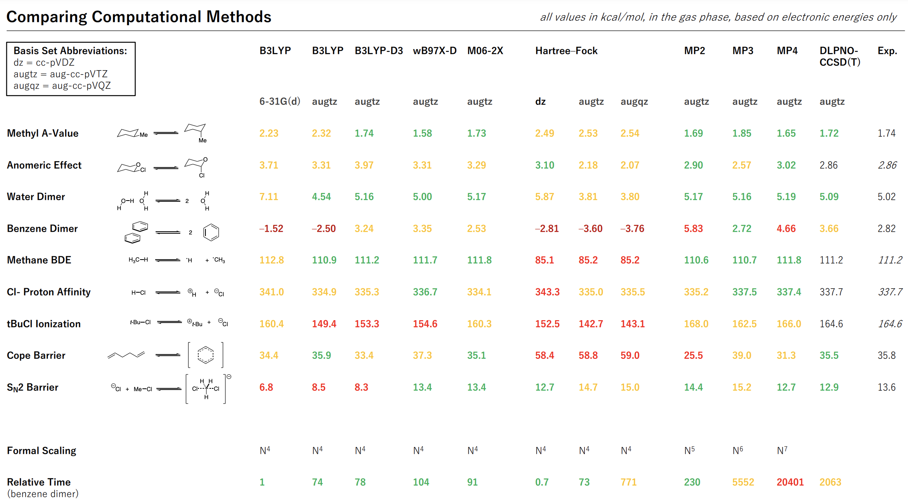

Spoilers below for Ursula Le Guin’s short story “The Ones Who Walk Away From Omelas.” If you haven’t read it, it’s short—go and do so now!
TW: child abuse, suicide.
In her short story “The Ones Who Walk Away From Omelas,” Ursula Le Guin describes an idyllic town (Omelas) built entirely on the misery of a single, innocent child. The inhabitants of Omelas lead a utopian life, but are burdened with the knowledge that this child suffers so that they can prosper. Although the story is brief—only five pages long—Le Guin pulls no punches in the emotional weight of her writing:
The child, who has not always lived in the tool room, and can remember sunlight and its mother's voice, sometimes speaks. "I will be good, " it says. "Please let me out. I will be good!" They never answer. The child used to scream for help at night, and cry a good deal, but now it only makes a kind of whining, "eh-haa, eh-haa," and it speaks less and less often. It is so thin there are no calves to its legs; its belly protrudes; it lives on a half-bowl of corn meal and grease a day.
The metaphor, and underlying social commentary, is perhaps obvious. Le Guin goes on to (implicitly) attack utilitarians:
[The spectators] would like to do something for the child. But there is nothing they can do. If the child were brought up into the sunlight out of that vile place, if it were cleaned and fed and comforted, that would be a good thing, indeed; but if it were done, in that day and hour all the prosperity and beauty and delight of Omelas would wither and be destroyed. Those are the terms. To exchange all the goodness and grace of every life in Omelas for that single, small improvement: to throw away the happiness of thousands for the chance of happiness of one: that would be to let guilt within the walls indeed.
And those who are good at rationalizing away injustice:
…as time goes on [the people] begin to realize that even if the child could be released, it would not get much good of its freedom: a little vague pleasure of warmth and food, no real doubt, but little more. It is too degraded and imbecile to know any real joy. It has been afraid too long ever to be free of fear. Its habits are too uncouth for it to respond to humane treatment. Indeed, after so long it would probably be wretched without walls about it to protect it, and darkness for its eyes, and its own excrement to sit in. Their tears at the bitter injustice dry when they begin to perceive the terrible justice of reality, and to accept it.
And those who think that suffering “gives life meaning”:
[The people] know that they, like the child, are not free. They know compassion. It is the existence of the child, and their knowledge of its existence, that makes possible the nobility of their architecture, the poignancy of their music, the profundity of their science. It is because of the child that they are so gentle with children. They know that if the wretched one were not there sniveling in the dark, the other one, the flute-player, could make no joyful music as the young riders line up in their beauty for the race in the sunlight of the first morning of summer.
The story concludes by describing the last, and rarest, response to Omelas:
At times one of the adolescent girls or boys who go see the child does not go home to weep or rage, does not, in fact, go home at all. Sometimes also a man or a woman much older falls silent for a day or two, then leaves home.... They leave Omelas, they walk ahead into the darkness, and they do not come back. The place they go towards is a place even less imaginable to most of us than the city of happiness. I cannot describe it at all. It is possible that it does not exist. But they seem to know where they are going, the ones who walk away from Omelas.
As I read the story, the conclusion is that few people have the moral courage to reject injustice entirely. Rejecting a broken system is scary, and risky; most people would rather lull themselves into complacency than try and build a better world. But implicit in this analysis is that the ones who walk away are making the right decision, and the ones who stay in Omelas are making the wrong one. In our own flawed world, when is this true?
The past decades have seen a great purge within American culture. The “Me Too” movement exposed the prevalence of sexual assualt within Hollywood, Boston Globe investigations revealed massive corruption within the Catholic Church, vast protests over the summer of 2020 decried systematic racism within American institutions, and in general institutions of all forms have come under attack for their failings. Every university has a racist legacy to reckon with; every business has an investor with unsavory political beliefs.
To some, this is the oft-derided “cancel culture”—finding fault with everyone, and viciously attacking people and organizations for even the slightest offenses. If “all have sinned and fall short,” then evil can never truly be eradicated, and all that this movement can do is destroy venerable institutions without constructing anything better. To others, however, making peace with evil is deplorable. Evil is the original pandemic; its capacity to spread is unparalleled, and its damage immeasurable. No compromise can be made with the enemy; no peace can be made with injustice.
Neither heuristic is sufficient; as usual, wisdom resides in the dialectic. For everyone who seeks to improve the world, then, the question presents itself anew: can one work within the system, flaws and all, or must change come from outside?
* * *
Albert Hirschman analyzed these issues in his 1970 book Exit, Voice, and Loyalty, which analyzes how consumers respond to declining quality. Hirschman draws a basic distinction between “exit,” the movement of individuals away from their current allegiance and towards a competitor, and “voice,” when individuals remain loyal and protest the change from within the system. An insightful point that Hirschman makes is that different fields of study view these options in different ways. Economists, who often think in terms of “perfect competition,” tend to assume exit is the most meaningful option, whereas political scientists prefer voice (i.e. engagement with the political process), thinking of exit as craven or traitorous.
These two options can be described in other terms. Exit is the mindset of the young reformer, the naïve, the idealistic, who believes the old system is beyond saving and a new world must be birthed. In contrast, voice is the perspective of small-c conservatism and Chesterton’s Fence, the wisdom of the agéd seer who has seen countless evils and knows how fragile civilization can be. This dichotomy does not separate Red from Blue; a love of exit unites Robespierre, Thunberg, and Trump, while voice embraces Henry Clay and Deng Xiaopeng alike.
When is exit better, and when is voice better? In certain circumstances exit can preclude voice by allowing only the most motivated and skilled members to escape a failing system. This removes the very elements of the populace necessary for change through voice, resulting in what Hirschman calls “an oppression of the weak by the incompetent and an exploitation of the poor by the lazy.” In this scenario, then, voice is superior. Exit also only functions when there are legitimate alternatives to the current system: in a monopoly, there can be no exit.
(Different Christian sects present an interesting case study here. In Catholicism, the Church is one united organization, and so exit is not an option: only voice is permitted. In contrast, Protestants are divided and subdivided into innumerable organizations, and so any individual Protestant can easily “vote with their feet” and join a church they agree with. The myriad failures of both sects suggests that neither solution is perfect.)
In contrast, voice presumes that change is possible—that the system is able to be reformed, and that doing so is more effective than simply starting over. For governments or Catholics, this may be true; for smaller organizations, it seems less true. An idealized capitalist market proceeds through relentless “creative destruction”: old firms become stagnant and stop innovating and are replaced by young startups, who last a few decades before themselves becoming stagnant. Creating the next Google, in most cases, is easier than fixing Google.
In other cases, the failures of the current system are so all-encompassing, so total, that it’s almost impossible to conceptualize the right reforms from within. Scott Alexander (of Astral Codex Ten, née Slate Star Codex) describes this phenomenon in his piece “Against Tulip Subsidies,” which critiques the discourse around rising tuition costs. Reforming how we pay college tuition, Alexander argues, “would subsidize the continuation of a useless tradition that has turned into a speculation bubble” and thus entrench the very thing we ought to uproot. Voice is better suited for marginal or incremental change; if you want to think big, start from scratch.
The choice between voice and exit thus hinges on several factors: how hard would it be to fix the current system, and how hard would it be to build a new and better system from the ground up?
* * *
As a high school student learning about synthetic organic chemistry, I came across a New York Times article entitled “Lethal Chemistry At Harvard.” The article told the story of Jason Altom, a brilliant Ph.D. candidate in organic chemistry who took his life after years of struggling on a challenging total synthesis problem. Altom’s story resonated with me so much that, as an undergraduate, I printed out his aspidophytine synthesis and pinned it above my desk as a sort of impromptu memento mori. (The synthesis, and Scheme 4 in particular, is transcendently beautiful.) He died just weeks after I was born; now I work in the same building in which he worked.
Altom’s story is by no means unique: according to the Chronicle of Higher Education, he was one of three graduate students in his lab to commit suicide within an 11-year period, with more suicides occuring in other labs, departments, and universities. Although some of the issues highlighted by his suicide have been addressed (I have an advising committee now in addition to my professor), the core reality remains the same: the success or failure of a given graduate student depends almost completely on their relationship with their advisor, making students willing to sacrifice almost anything to please their PI. Even those who “succeed” often emerge damaged by the process, aspirations lowered and ambition quenched.
Nevertheless, although Le Guin might not approve, academia can be defended through a utilitarian argument: the considerable benefits of academic research and education outweigh the human costs and other drawbacks. This argument, while compelling, presumes that the functions of graduate school are irreplaceable—that no better alternative can be created, that exit is impossible. I would also argue that, although academic research is good, it’s likely it could be improved and made better. Indeed, the very importance of research makes it uniquely susceptible to decline; the “ceiling” of scientific progress is so high that even considerable atrophy still leaves behind an important and productive institution. Hirschman again:
The wide latitude humans societies have for deterioration is the inevitable counterpart of man’s increasing productivity and control over his environment. Occasional decline as well as prolonged mediocrity—in relation to achievable performance levels—must be counted among the many penalties of progress.
If we accept that improvements to the “prolonged mediocrity” of the academic research system are necessary, the question becomes familiar: can the system be fixed from within (voice), or would it be easier to start from scratch (exit)?
Reforming any huge system is non-trivial, but academia presents special difficulties; as Hirschman describes, academia protects itself by selecting for those who can stomach its evils. The conscientious and compassionate flee, for the most part, to undergraduate institutions or industrial positions, enriching R1 faculty positions in those less encumbered by moral concerns. (This statement notwithstanding, I don’t mean to condemn faculty en masse; I have the utmost love and admiration for many faculty members I know who push back against the excesses of the system.) This selection effect deprives voice of its strongest assets, making reform that much harder.
Exit, too, is not without its challenges. The problems we face cannot be solved simply by moving to a different university or a different country; the interconnectedness of academia makes it monolithic. To contemplate exit from the academic system means a total revolution, erasing centuries of norms and paradigms—the relationship between professors and graduate students that Altom blamed for his death, which echoes the ancient master–apprentice relationship, dates back to Justus von Liebig in 19th-century Germany. Exit means new journals, new funding paradigms, new ways to recruit students and new ways to train them. Proper regime change leaves no stone unturned.
Perhaps it's the optimism of youth, or a misguided belief in the possibility of progress. But day by day I find myself believing less in voice and more in exit. The past few years have seen a flourishing of non-academic models for science. New ventures like Arcadia, the Arc Institute, New Science, the Astera Institute, and the more venerable Santa Fe Institute are demonstrating that science can be done outside a university—and the growing interest from industry and philanthropists for funding basic research indicates that the demand is there. But at the same time, these little endeavors all combined represent less than a percent of the current governmental–academic complex. Time will tell, too, if the flaws of our current system are fated to be recapitulated anew in any replacement.
Will it be possible to build a robust and practical scientific ecosystem in parallel to the current system, gradually moving more and more pieces into position until at last Uqbar becomes reality? I don’t know—but I’m excited to find out.
Thanks to Eugene Kwan, Ari Wagen, and Taylor Wagen for reading a draft of this piece.
The failure of conventional calculations to handle entropy is well-documented. Entropy, which fundamentally depends on the number of microstates accesible to a system, is challenging to describe in terms of a single set of XYZ coordinates (i.e. a single microstate), and naïve approaches to computation simply disregard this important consideration.
Most programs get around this problem by partitioning entropy into various components—translational, rotational, vibrational, and configurational—and handling each of these separately. For many systems, conventional approximations perform well. Translational and rotational entropy depend in predictable ways on the mass and moment of inertia of the molecule, and vibrational entropy can be estimated from normal-mode analysis at stationary points. Conformational entropy is less easily automated and as a result is often neglected in the literature (see the discussion in the SI), although somerecentpublications are changing that.
In general, however, the approximations above only work for ground states. To quote the Gaussian vibrational analysis white paper:
Vibrational analysis, as it’s descibed in most texts and implemented in Gaussian, is valid only when the first derivatives of the energy with respect to displacement of the atoms are zero. In other words, the geometry used for vibrational analysis must be optimized at the same level of theory and with the same basis set that the second derivatives were generated with. Analysis at transition states and higher order saddle points is also valid. Other geometries are not valid.
While this isn't a huge issue in most cases, since most processes are associated with a minima or first-order saddle point on the electronic energy surface, it can become a big deal for reactions where entropy significantly shifts the position of the transition state (e.g. Figure 4 in this study of cycloadditions). Even worse, however, are cases where entropy constitutes the entire driving force for the reaction: association/dissociation processes. In his elegant review of various failures of computational modelling, Mookie Baik illustrated this point by showing that no transition state could be found for dissociation of the water dimer in the gas phase:
Figure 11 from Baik's review.
Panel (b) of this figure shows the electronic energy surface for dissociation, which monotonically increases out to infinity—there's never a maximum, and so there's no transition state. To estimate the position of the transition state, Baik proposes computing the entropy (using the above stationary-point approximations) at the first few points, where the two molecules are still tightly bound, and then extrapolating the curve into a sigmoid function. Combining the two surfaces then yields a nice-looking (if noisy) curve with a clear transition state at an O–H distance of around 3 Å.
This approach, while clever, seems theoretically a bit dubious—is it guaranteed that entropy must always follow a smooth sigmoidal interpolation between bound and unbound forms? I thought that a more direct solution to the entropy problem would take advantage of ab initio molecular dynamics. While too slow for most systems, AIMD intrinsically accounts for entropy and thus should be able to generate considerably more accurate energy surfaces for association/dissociation events.
Using presto, I ran 36 constrained 100 ps NVT simulations of the water dimer with different O–O distances, and used the weighted histogram analysis method to stitch them together into a final potential energy surface. I then compared these results to those obtained from a direct opt=modredundant calculation (with frequencies at every point) from Gaussian. (All calculations were performed in Gaussian 16 at the wB97XD/6-31G(d) level of theory, which overbinds the water dimer a bit owing to basis-set superposition error.)
The results are shown below (error bars from the AIMD simulation are derived from bootstrapping):
Comparison of different approaches for studying dissociation of the water dimer.
As expected, no transition state can be seen on the black line corresponding to the electronic energy surface, or on the green line corresponding to enthalpy. All methods that depend on normal-mode analysis show sizeable variation at non-stationary points, which is perhaps unsurprising. What was more surprising was how much conventional DFT calculations (purple) overestimated entropy relative to AIMD! Correcting for low-frequency vibrational modes brought the DFT values more into line with AIMD, but a sizeable discrepancy persists.
Also surprising is how different the AIMD free energy surface looks from Baik's estimated free energy surface. Although the scales are clearly different (I used O–O distance for the X axis, whereas Baik used O–H distance), the absence of a sharp maximum in both the AIMD data and the corrected Gibbs free energy data from conventional DFT is striking. Is this another instance of entropy–enthalpy compensation?
In the absence of good gas-phase estimates of the free energy surface, it's tough to know how far the AIMD curve is from the true values; perhaps others more skilled in these issues can propose higher-level approaches or suggest additional sources of error. Still, on the meta-level, this case study demonstrates how molecular dynamics holds promise for modelling things that just can't be modelled other ways. Although this approach is still too expensive for medium to large systems, it's exciting to imagine what might be possible in 5 or 10 years!
Thanks to Richard Liu and Eugene Kwan for insightful discussions about these issues.
Talent, by Tyler Cowen and Daniel Gross, is a book about talent selection—in other words, a book about hiring. Although I confess this sounded very boring to me initially, the authors address this concern right away:
Talent search is one of the most important activities in virtually all human lives. Elon Musk personally interviewed the first three thousand employees at SpaceX because he wanted to make sure the company was hiring the right people. Don’t think of talent search as a problem faced by “the boss” or by human resource departments… Just about everyone is on a quest to find talent in others or to show off their own.
(emphasis original)
Not only is finding talented people a necessary prerequisite for any great endeavor, but “excess credentialism and highly bureaucratic hiring procedures” means that existing protocols for finding excellence are at best inefficient and at worst counterproductive. This problem is everywhere, the authors assert: venture capital is full of money looking for people to fund, discrimination against women and minorities means that talented people don’t get the resources they deserve, and increasing globalization means that ever-larger pool of potential talent are entering the global market. The authors summarize by stating that “the world’s inability to find and mobilize enough talent [is] one of the most significant failures of our time,” and hope that this book can be the first of many seeking to address this problem.
How, then, do we do better at identifying talent?
Interviewing
Interviewing, although oft-derided, remains one of the best ways to learn about someone. The authors devote considerable time to the question of how best to interview someone, and especially how to gain useful, non-scripted information about personality:
The best interviews are not formal interviews at all. We’re sure you can think of other creative ways to take the candidate out of interview mode and into their everyday self. This is important, because the everyday self is what you’ll get if you hire them.
Many potential questions are discussed: some memorable examples focus on examining someone’s self-conception of their past and their current habits (e.g. “what are the open tabs on your browser right now?”). The best questions prompt authentic, off-the-cuff answers that give insight not into what the candidate wants to tell you but into who they really are. (There’s a fundamental pessimism about people’s self-deception that permeates this section.)
The authors close by emphasizing the importance of being a good conversationalist, a skill underrated by many technical people:
Conversing well with potential hires or award winners is one of the most important things that you can do. Keep in mind that it not only brings you talent, but it helps you retain talent and mobilize those individuals to use their skills better. If you cannot relate to your talent at a conversational level, you will learn less, you will build less trust, and you will end up relying too heavily on direct monetary incentives to motivate people.
Zoom Interviews
Cowen and Gross devote an entire chapter specifically to Zoom interviews, which they feel are underrated and can be just as useful as in-person interviews. Although many people find Zoom uncomfortable, this may actually be an advantage of the medium:
Many women have remarked on Twitter that they feel on more equal footing on a Zoom call… A lot of people used to coming across as high-status and charismatic in person will feel a bit lost through the screen. Witty repartee also can be hard to pull off over an internet call, and that too may diminish the stature of those individuals who are used to using clever banter to command a room.
You might be even one of these people:
One of the hardest mental adjustments for people to make is to realize how much their positive affect relies on their in-person rejection of high social status. To give a simple example, you might not be as witty as you think! You will do better in the online call if you realize how much your in-person presence relies on a kind of phoniness.
I also liked this observation about how Zoom interviews can be more equitable:
The supposed information poverty of the online interview also may help some interviewers overcome potential biases against women and also some minority groups… The online interview, by making everyone less charismatic, may help counter your bias against these individuals.
Intelligence
Cowen and Gross review a variety of data about the importance of intelligence in various careers. The picture they present is complicated; IQ is clearly important for many professions, but perhaps less so than many people think. In general, Cowen and Gross seem to conclude that intelligence is overrated in hiring:
In what might seem like a paradox, it can be hard to spot intelligence, drive, and other positive qualities at the very, very top. Why? Well, the very, very top of the market usually is underexplored territory, virtually by definition. The most talented people usually are doing something extraordinary and fairly new, and often they are so unbelievably talented that most of us just don’t have the ability to appreciate their talents, at least not until their final achievements are on full display.
Cowen and Gross also reference Marc Andressen’s essay “How To Hire the Best People You’ve Ever Worked With,” which argues that drive, self-motivation, curiosity, and ethics are more important considerations than raw intelligence. Furthermore, they point out that intelligence is already priced into the market—everyone knows smart employees are good, and so “the obviously smart people are not always the obvious bargains.”
(It strikes me that humanities PhDs might be an underutilized pool of high-IQ workers, albeit with little technical training. Perhaps a business with an acute need for raw intelligence and few required technical skills might capitalize on this… this probably already exists.)
Personality
Much as they did for intelligence, Cowen and Gross analyze the five-factor personality model with an eye towards finding good hires at the margin. Their literature review finds that high conscientiousness is “the single best predictor of overall job performance” (other factors being poorly predictive), but they note that certain fields may benefit from a less responsible approach:
Sometimes leaders of organizations can have too much rather than too little conscientiousness…. leadership skills often involve a mix of creativity and daring and ability to reimagine the risky future, and those are not necessarily the traits found in the people who punch the time clock promptly every day. Elon Musk would have gotten in less trouble had he not smoked a joint on the live video stream of Joe Rogan’s podcast, but a more sedate Elon Musk probably would not have built SpaceX and Tesla with the same fervor.”
(Additionally, the authors note that conscientiousness, like intelligence, is already priced into the market.)
The authors go on to contrast conscientiousness with stamina, which they call “one of the great underrated concepts for talent search, especially when you are looking for top performers and leaders and major achievers.” Stamina refers to perseverance of effort, or a person’s ability to keep working diligently for long periods of time: since returns to learning and improvement compound over time, high stamina ends up making a huge difference in the long run. The authors continue:
Don’t just think in terms of levels of current ability, because over time, rates of change very often prove to be more important. Think in terms of trajectories. When it comes to a job or fellowship candidate, think about the person’s developmental curve and whether the candidate is truly committed to consistent, perpetual self-improvement, as you might expect from a top athlete or musician…. If a person doesn’t seem to think much about self-improvement, they still might be a good hire, but then you had better be pretty content with their currently demonstrated level of expertise.
Other “more exotic” traits, both good and bad, that the authors discuss are:
Morlockism, the capacity to lock oneself “in a cave” and work very hard for several days.
Sturdiness, “the quality of getting work done every day, with extreme regularity.” (Sturdiness and Morlockism appear to be substitutionary traits.)
Generativeness, a capacity of people to “talk quickly, move quickly, and in general seem to be enthralled with life.” (Balaji Srinivasan is cited as an example.)
Insecure overachievement, the quality of “never quite feeling comfortable with your output despite knowing at a deep level that it is good” (emphasis original), which often results in high output but problematic psychology. Closely related, but more negative, is pessimistic perfectionism, exhibited by people who “believe that their work is never good enough” and “don’t have the ongoing drive and impetus of insecure overachievers.”
Clutteredness, a trait of otherwise smart people who are unable to express their thoughts in a coherent or intelligible manner. Perhaps obviously, such individuals ought not to be put in positions that emphasize clear communication.
The distinct trait of vagueness, where someone thinks in “mushy concepts and unspecific terms… not really drawing any conceptual distinctions at all.” This is problematic for strongly analytical roles.
Precocity, how young a person first displayed aptitude. Probably more important for fluid intelligence than for skills that require long accumulation of knowledge.
Adhesiveness, or the ability to be a good team player and fix problems (related to high social intelligence). This seems largely orthogonal to many other skills discussed, and may be crucial for some jobs and largely irrelevant for others.
Ability to perceive and climb the right hierarchy, which lacks a catchy moniker. Many promising and highly skilled people manage to waste time focusing on the wrong problems. Cowen references chess players who never consider the world outside chess, and Gross describes potential founders who focus more on prestige than actually building their company. (To quote Peter Thiel: “be long substance, short status.”) I’m reminded of incredibly brilliant quiz bowl players I knew who never managed to translate their skills into success outside academic competitions.
Another interesting trait is how many conceptual frameworks one possesses. A person with many frameworks can put themselves into the mind of an engineer, a salesperson, a regulator, or a user, whereas more limited people struggle to escape their own viewpoint.
The discussion of these traits was one of my favorite parts of the book. I found it very useful to imagine various personalities and dissect what their strengths and flaws might be; except in rare cases, it seems that every strength has a corresponding flaw. As the authors write, “skill in spotting flaws in other people can lead to very positive matching outcomes, and that is another reason the dialectical perspective of seeing both the good and bad sides of talent is highly useful.”
Overcoming Bias
The authors first discuss disabilities, observing that often disability can augment talent through either “redirection of effort” or “compensation and adaptation.” The first case is typified by Richard Branson (founder of Virgin Galactic), who recounts how his dyslexia made it difficult for him to focus on details and pushed him towards important big-picture thinking. In contrast, the second case is typified by blind lawyers, who frequently know the law better than their sighted counterparts because they are unable to look it up as quickly. In either case, what appears to be purely a disadvantage in fact leads to subtle advantages which might be easily overlooked: “disability is a highly complex notion and by no means always negative on the whole.”
The subsequent section focuses on women and minorities. As alluded to in the section on Zoom interviewing, the authors observe that there are a “fairly limited range of behaviors allowed” for women in the workplace, and as a result that many women’s talents are not fairly assessed. In particular, aggression is viewed as a positive for high-status men but a negative for high-status women. The authors then summarize a variety of literature which supports “the notion of a confidence gap as one of the main differences between men and women in the workplace” (emphasis added). In light of this finding, Cowen and Gross make three points:
Favor women for jobs where low confidence is advantageous; “for many jobs, including in politics, diplomacy, and prudential supervision, epistemic humility is more important than risk-taking.”
Look extra-hard for confident women, because their skills are likely undervalued by the market; you can “gain from the world’s statistical discrimination and in the process rectify an injustice.”
Be mindful that risk-taking and competitiveness are often viewed as key values in male-dominated organizations, even when they needn’t be, and that this faulty institutional self-image may lead to unnecessary barriers to the advancement of women.
The authors conclude this section by citing work that suggests women are better at talent spotting, both “better at assessing the intelligence of both men and women” and “better than men at detecting deceit”; so good talent selection should involve women!
Cowen and Gross then discuss hiring minorities. As with women, the main challenge is perceiving the real talents of the people you talk to; cultural differences often lead to more awkward and formal conversations that struggle to escape “interview mode.” It’s hard to overcome this, but the authors propose the exercise of putting oneself into a situation where you feel culturally uncomfortable and observing how you struggle to present yourself and convey your ideas naturally. Emotionally internalizing this feeling can help you while interviewing those from different backgrounds. If nothing else, realizing that you struggle to perceive the abilities of minorities accurately can help you consciously compensate in the other direction.
Conclusion
One of my key takeaways from Talent is this: every job requires aptitude along certain dimensions and is relatively insensitive to variation along other dimensions. The key to intelligent recruiting is to attune yourself to evaluating people only along important dimensions of talent while ignoring unimportant dimensions. Everyone has shortcomings; the most efficient hiring strategy is not to hire people without shortcomings, but to make sure their shortcomings are well-tolerated in the job you’re hiring for. (For instance, disagreeability is often viewed as positive for startup founders, but would certainly be deleterious for a salesperson. A disorganized chemist would do better in exploratory synthesis than in a job that required precise kinetic measurements.)
Another nice thought I got from Talent was a fundamental positivity about the ability of intelligent hiring to alleviate bias or prejudice. Cowen and Gross point out that if you believe a certain group of people is fundamentally overlooked or discriminated against by the market, the logical implication of that belief is that you should hire from that group: if you’re right, you’re not only helping yourself but also your hires. This little bit of free-market thinking turns the issue of bias from a negative one (“how is society mistreating people?”) to a positive one (“how can my talent search benefit by avoiding existing prejudice?”), which I found helpful.
But perhaps the most fundamental conclusion is simply that finding talent is an important, and underrated, skill for many areas of life. In the authors’ own words:
The vision that talent search is ‘a thing,’ that it is an art that can be learned and improved on, and that it can be taught and communicated to others—that is the fundamental point of this presentation.
I’d recommend this book both for people looking for talent (professors, founders, leaders) and for those hoping to display their own talent accurately to the world.
In our recently published work on screening for generality, we selected our panel of model substrates in part using cheminformatic techniques. We're not the only people to do this, obviously: cheminformatics is a busy and important field, and even in organic chemistry there's lots of papers using similar techniques these days (I liked this work from the Doyle lab). But since often the people who would benefit most from a new technique are the people who might be most intimidated by wading though documentation, I thought I'd post some simple example code here that others can copy-and-paste and modify to suit their own ends.
There are lots of ways to approach plotting chemical space, but fundamentally all approaches must address two big questions:
How do you convert molecules into some numeric representation?
Once you have numeric representations of all your molecules, how do you plot this?
I chose a relatively simple approach to the first question: molecular fingerprints (if you don't know what these are, I liked this introduction from Towards Data Science).
Based on Greg Landrum's findings, I used the RDKit7 fingerprint. RDKit is the premier cheminformatics package, and well worth a download for anyone interested in these concepts.
For the second question (dimensionality reduction), I used the UMAP algorithm. There are other approaches to this, like tSNE or PCA, but in my opinion there are relatively convincing reasons to favor UMAP (although this paper points out some limitations).
Without further ado, then, here's some example code to take a list of IUPAC-type names and generate a 2D representation:
from rdkit import Chem
from urllib.request import urlopen
import re, tqdm, sys, umap
import numpy as np
import matplotlib.pyplot as plt
# make matplotlib look good
plt.rc('font', size=11, family="serif")
plt.rc('axes', titlesize=12, labelsize=12)
plt.rc(['xtick', 'ytick'], labelsize=11)
plt.rc('legend', fontsize=12)
plt.rc('figure', titlesize=14)
%matplotlib inline
%config InlineBackend.figure_format='retina'
# function for turning names into SMILES strings, because I find writing SMILES by hand impossible
def smiles_from_name(name):
try:
url_name = re.sub(" ", "%20", name)
url = 'http://cactus.nci.nih.gov/chemical/structure/' + url_name + '/smiles'
smiles = urlopen(url, timeout=5).read().decode('utf8')
return smiles
except Exception as e:
print(name + " failed SMILES conversion")
class THbC():
""" A tetrahydrobetacarboline. """
def __init__(self, group, substituent, color="grey"):
self.name = f"2-benzyl-1-({group})-{substituent}2,3,4,9-tetrahydro-1H-pyrido[3,4-b]indole"
self.smiles = smiles_from_name(self.name)
self.mol = Chem.MolFromSmiles(self.smiles)
self.fingerprint = None
self.color = color
def get_fingerprint(self):
if self.fingerprint is None:
self.fingerprint = Chem.RDKFingerprint(self.mol, maxPath=7, branchedPaths=False)
return self.fingerprint
# I just wrote out a lot of aromatic groups...
groups = [
"phenyl", "4-methylphenyl", "4-methoxyphenyl", "4-fluorophenyl", "4-chlorophenyl", "4-bromophenyl",
"4-(trifluoromethyl)phenyl", "4-nitrophenyl", "4-cyanophenyl", "piperonyl", "dihydrobenzofuryl",
"3-methylphenyl", "3-methoxyphenyl", "3-fluorophenyl", "3-chlorophenyl", "3-bromophenyl",
"3-(trifluoromethyl)phenyl", "3-nitrophenyl", "3-cyanophenyl", "2-methylphenyl", "2-methoxyphenyl",
"2-fluorophenyl", "2-chlorophenyl", "2-bromophenyl", "2-(trifluoromethyl)phenyl",
"2-nitrophenyl", "2-cyanophenyl", "2-pyridyl", "3-pyridyl", "4-pyridyl", "2-thiophenyl", "3-thiophenyl",
"2-furyl", "3-furyl", "2-quinolinyl", "3-quinolinyl","6-quinolinyl", "5-quinolinyl", "8-quinolinyl",
"5-indolyl", "3-indolyl", "7-azaindol-3-yl", "2-pyrrolyl", "3-pyrrolyl", "2-thiazolyl", "4-thiazolyl",
"5-thiazolyl", "5-phenylisoxazol-3-yl", "imidazol-2-yl" "5-pyrimidyl", "5-indazolyl", "3-pyrazolyl",
"4-pyrazolyl", "4-imidazolyl"
]
# substituents on the indole ring, and corresponding colors
subs = ["", "6-methoxy", "6-chloro"]
colors = ["grey", "red", "green"]
# build THbC objects (this might take a minute or two)
mols = list()
for group in tqdm.tqdm(groups):
for sub, c in zip(subs, colors):
mols.append(THbC(group=group, substituent=sub, color=c))
# generate UMAP embedding
crds = umap.UMAP(n_components=2, n_neighbors=20, min_dist=0.1, metric="jaccard").fit_transform([m.get_fingerprint() for m in mols])
# plot the result
fig, ax = plt.subplots(nrows=1, ncols=1, figsize=(5,5))
plt.scatter(crds[:,0], crds[:,1], c=[m.color for m in mols], s=20, alpha=0.8)
ax.set_xticks([])
ax.set_yticks([])
plt.xlabel("UMAP1")
plt.ylabel("UMAP2")
plt.tight_layout()
plt.show()
This code generates the following image:
A 2D plot of the molecules shown above. Colors represent different substitution on the indole ring.
Although this program is a little clunky (slow calls to the CACTUS web service), it works well enough and is easy to modify as needed (to label the individual molecules, or apply a clustering algorithm to pick out model substrates). I hope you find this useful!
In the course of preparing a literature meeting on post-Hartree–Fock computational methods last year, I found myself wishing that there was a quick and simple way to illustrate the relative error of different approximations on some familiar model reactions, like a "report card" for different levels of theory. I couldn't find any such graphic online, so I decided to make one (click image to view high-res PDF):

Illustration of the accuracy of various computational methods for various model reactions
All values are in kcal/mol, and the colors encode the error of the computed value: green values are within 10% or 1 kcal/mol of the truth, while yellow values are within 50% or 5 kcal/mol and red values are outside that range. (In each case the more restrictive cutoff was used.) Where possible, values have been benchmarked to experimental data; in the remaining cases, coupled-cluster calculations were employed.
Dispersion corrections are badly needed for density-functional theory, but beyond that there isn't a clear "best" DFT method.
Hartree–Fock theory consistently predicts electron-dense species to be less stable than they are, owing to the neglect of electron correlation: so anions are too basic/nucleophilic, bonds are too weak, and the aromatic Cope transition state is far too high in energy.
Second-order Møller–Plesset perturbation theory (MP2) overcorrects the Hartree–Fock error, MP3 overcorrects the MP2 error, and MP4 overcorrects the MP3 error. The result is that HF and MP3 tend to "zig" where MP2 and MP4 tend to "zag." (The crude solution of just averaging MP2 and MP3 is surprisingly effective.)
DLPNO-CCSD(T), from Neese and co-workers, really is a magical combination of speed and accuracy!
Hopefully this overview, while simple, helps to build intuition about how good or bad computational predictions at a given level of theory are.